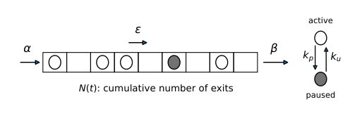
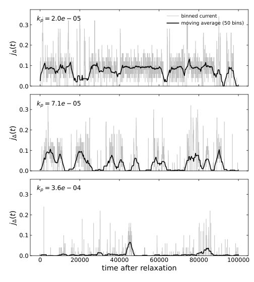
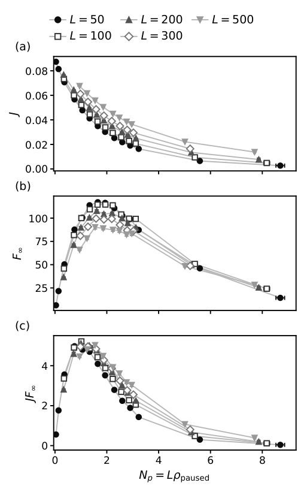

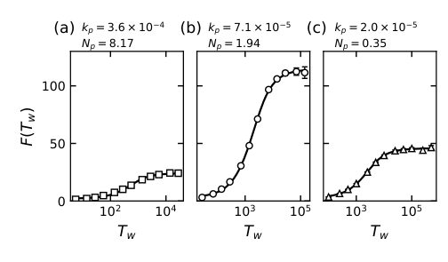
Highlighted author(s): Jonathan Keeling
Authors: Thibaut Lacroix, Adam Burgess, Nicola Lorenzoni, Julian Wiercinski, Kian Damezin, James Lim, Dario Tamascelli, Alex W. Chin, Moritz Cygorek, Brendon W. Lovett, Jonathan Keeling, Susana F. Huelga, Martin B. Plenio, Erik M. Gauger
Type: theory · Category: numerical methods · PDF: https://arxiv.org/pdf/2608.09850v1
Analysis basis: full PDF text, analyzed in chunks
Topic relevance: 🔥 methods for driven-dissipative 5/5 · Keldysh / 2PI / non-Gaussian methods 3/5 · correlated / nonlocal dissipation 3/5 · driven-dissipative phase transition 2/5 · analog quantum simulation 1/5 · non-equilibrium universality 1/5 · quantum measurements 1/5
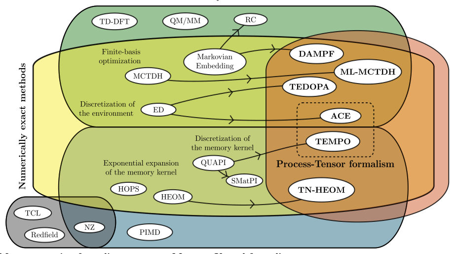
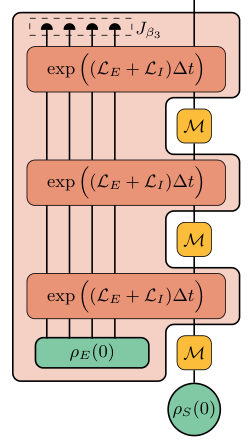
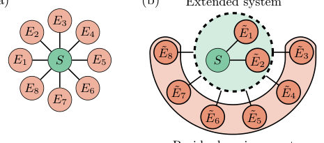
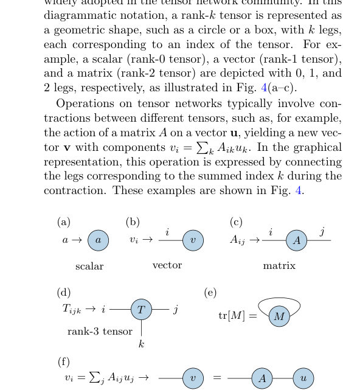
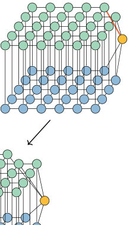
Summary. This review surveys state-of-the-art methods for simulating open quantum system dynamics beyond simple approximations. It highlights that tensor networks offer a crucial, numerically exact framework to manage the exponential complexity arising from environmental memory effects. The paper provides a comprehensive guide to these advanced computational tools.
Why it may be interesting. This is highly relevant as it directly addresses advanced techniques (Tensor Networks) for simulating complex quantum systems (Open Quantum Systems) that are central to modern AMO physics and quantum optics research.
Main problem. The primary challenge is accurately simulating open quantum system dynamics when non-Markovian effects are present, as standard perturbative or Markovian approaches fail due to exponential memory kernel scaling.
Main result. Tensor networks provide a powerful and systematically improvable formalism that enables the formulation of numerically exact methods for describing these complex, non-perturbative dynamics.
Method. The paper reviews various tensor network based techniques (like HEOM implementations) designed to handle the full time evolution by parameterizing quantum states efficiently, thereby overcoming exponential Hilbert space growth.
Model / system. The focus is on open quantum systems described by a total Hamiltonian H = Hs + He + Hi, where the system S interacts with a large environment E (e.g., photonic modes or phonons).
Key observables. System reduced density matrix rho_S(t), non-Markovian memory effects.
Important parameters / regimes. Coupling strength, environmental correlation time scales, and convergence parameters for the tensor network contractions.
Assumptions / limitations. The methods aim to be numerically exact by controlling errors through systematic parameter refinement, moving beyond uncontrolled approximations inherent in mean-field or simple perturbative treatments.
Figures summary. Figure 1 is noted as a Venn diagram classifying numerical tools based on their underlying formalism (e.g., memory kernel vs. explicit environment representation).
Paper structure. The review establishes the computational difficulty of non-Markovian OQS dynamics, contrasts Markovian/perturbative methods with the need for exact treatments, and then systematically presents tensor network approaches as the unifying, powerful toolbox.
The description of open quantum system dynamics beyond the perturbative treatment (usually associated with Markovian master equations) is a computationally challenging task due to the unfavorable exponential scaling of memory kernels. Developed over recent decades in the context of quantum information and condensed matter, tensor networks provide both a new formalism and a toolbox for overcoming previous computational bottlenecks. This framework enables the formulation of non-perturbative, numerically exact methods for describing the dynamics of open quantum systems to controllable numerical accuracy. In this review, we present these methods and discuss their commonalities and differences to paint a comprehensive view of the field.
Highlighted author(s): Andreas Hemmerich
Authors: Rui-Lang Zeng, Zi-Yao Zhang, Ling-Na Wu, Cong-Jie Zhang, Da-Gang Xia, Andreas Hemmerich, Xiao-Qiong Wang, Zhi-Fang Xu
Type: both · Category: quantum gases · PDF: https://arxiv.org/pdf/2608.08124v1
Analysis basis: full PDF text, analyzed in chunks
Topic relevance: 🔥 Full counting statistics 4/5 · 🔥 analog quantum simulation 4/5 · quantum measurements 3/5 · driven-dissipative phase transition 2/5 · Keldysh / 2PI / non-Gaussian methods 1/5 · correlated / nonlocal dissipation 1/5 · methods for driven-dissipative 1/5 · non-equilibrium universality 1/5
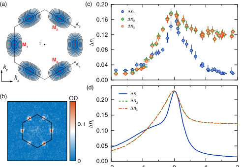
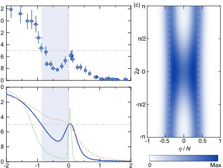
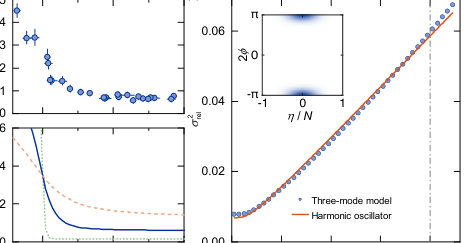
Summary. The paper investigates number-phase dynamics in a frustrated orbital superfluid realized with ultracold atoms. By measuring mode-resolved population fluctuations, the authors distinguish between two distinct physical mechanisms: barrier softening due to quantum thermal effects in one regime, and phase rigidity leading to harmonic confinement in another. This establishes fluctuation measurements as a powerful diagnostic tool for understanding complex interacting quantum fluids.
Why it may be interesting. This work provides a detailed experimental roadmap for using fluctuation measurements to probe complex quantum many-body physics in ultracold atomic systems, linking measurable noise statistics directly to underlying Hamiltonian symmetries and dynamics.
Main problem. The study aims to reveal how fluctuations are organized among competing orders in frustrated quantum matter, as static order parameters fail to capture the full dynamics.
Main result. The research demonstrates that number-phase dynamics manifest differently depending on bias: phase scrambling softens barriers in minority-valley regimes, while phase rigidity induces harmonic confinement in stripe phases.
Method. The authors measure mode-resolved shot-to-shot population fluctuations and compare these experimental data against effective canonical models derived from a three-mode Hamiltonian.
Model / system. The system is an ultracold gas of atoms loaded into the $p$-orbital band of a 2D triangular optical lattice, realizing a minimal three-valley superfluid. The dynamics are governed by an effective three-mode Hamiltonian including bias and pair-tunneling terms.
Key observables. Mode-resolved shot-to-shot population fluctuations ($\Delta n_i$), correlation coefficients ($C_{23}$), normalized relative variance ($\sigma^2_{ ext{rel}}$), and the total collective susceptibility $(\Delta n)^2$.
Important parameters / regimes. Tunable valley bias ($\Delta E$), temperature/density ratio ($T/N$), and comparison between quantum zero-point motion and thermal limits.
Assumptions / limitations. The analysis relies on mapping the dynamics onto an effective canonical model, using harmonic expansions around phase-locked minima in certain regimes, and acknowledging limitations due to finite-time relaxation or spatial averaging.
Figures summary. Figures illustrate $\Delta n_i$ vs. bias showing non-monotonic behavior; $C_{23}$ shows dips indicating binary competition; $(\Delta n)^2$ peaks at degeneracy; and the final figure compares measured relative variance ($\sigma^2_{ ext{rel}}$) to harmonic oscillator fits in the stripe phase.
Paper structure. The paper systematically analyzes fluctuation signatures across different bias regimes: first, showing how fluctuations reveal hidden number-phase back-action; second, quantifying correlations ($C_{23}$) and susceptibility $(\Delta n)^2$; finally, contrasting barrier softening (negative bias) with phase rigidity/harmonic confinement (positive bias).
Frustrated quantum matter can host intertwined orders rooted in symmetry-related low-energy landscapes, yet static order parameters alone do not reveal how fluctuations are organized among competing configurations. Here we measure mode-resolved shot-to-shot population fluctuations in a $p$-orbital triangular-lattice superfluid with a tunable bias among three valleys. We observe a bias-tuned evolution from enhanced, anticorrelated fluctuations of two minority valleys toward strong confinement of relative-population fluctuations in a selected two-valley stripe phase. The dominant fluctuation structure is captured by an effective canonical model that includes interactions among the condensed modes, supporting a quasi-equilibrium description of the coherent three-valley condensate. Together, the data and model reveal a quantum--thermal regime shaped by pair-tunneling-induced number--phase dynamics, in which relative-phase scrambling softens effective barriers in the minority-valley regime, while phase rigidity gives rise to macroscopic harmonic confinement in the stripe phase. Our results establish mode-resolved fluctuation measurements as a probe of hidden number--phase back-action in frustrated quantum fluids.
Highlighted author(s): Markus Greiner
Authors: Lin Su, Michal Szurek, Alec Douglas, Ceren B. Dag, Markus Greiner
Type: experiment · Category: other · PDF: https://arxiv.org/pdf/2608.09924v1
Analysis basis: full PDF text, analyzed in chunks
Topic relevance: 🔥 analog quantum simulation 4/5 · quantum measurements 3/5 · driven-dissipative phase transition 1/5 · interference shaping light 1/5 · methods for driven-dissipative 1/5
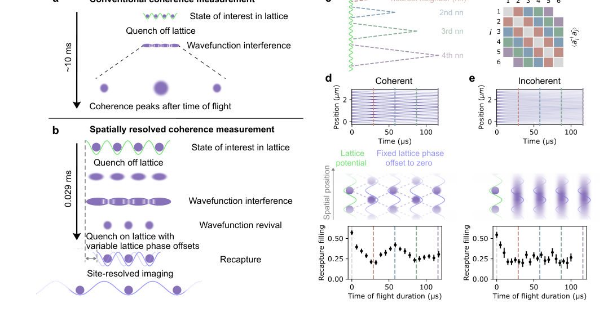
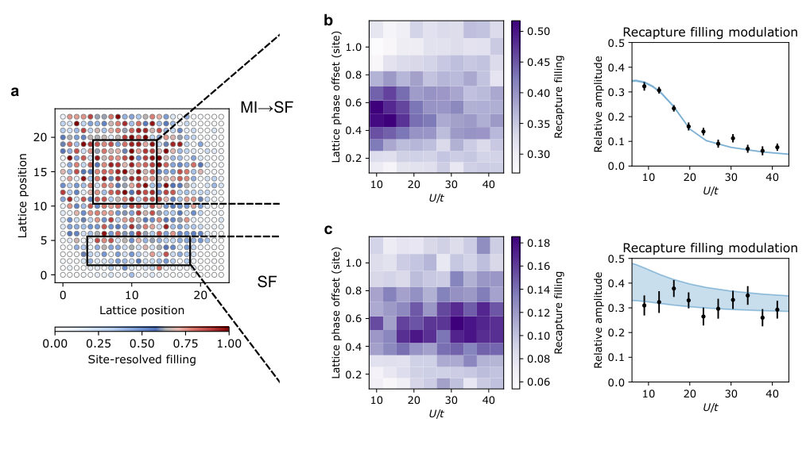
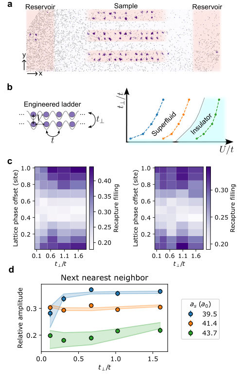
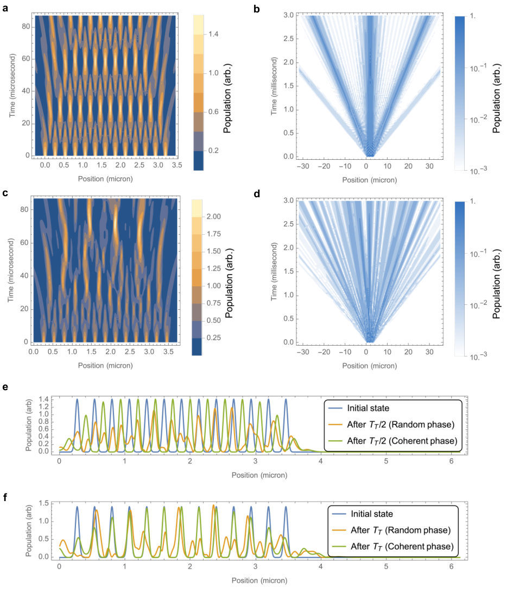
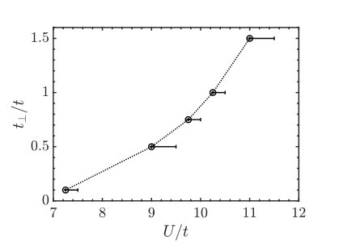
Summary. The paper presents a novel 'quantum coherence microscope' using the Talbot effect applied to ultracold atoms in optical lattices. This technique maps hard-to-measure off-diagonal quantum correlations onto measurable site-resolved density modulations. It successfully applies this method to characterize fundamental physics, such as mapping out the superfluid-Mott transition locally and measuring long-range coherence.
Why it may be interesting. This work provides a powerful, non-destructive experimental tool for accessing higher-order quantum correlations that are typically difficult to measure directly, bridging the gap between density measurements and full coherence mapping in cold atom simulators.
Main problem. The primary challenge is achieving spatially resolved measurements of off-diagonal quantum correlations (coherence) beyond simple local density measurements in interacting many-body systems.
Main result. The authors successfully demonstrated a technique to map these elusive off-diagonal coherence signals onto measurable site-resolved density modulations, enabling the local probing of phase transitions like the superfluid-Mott transition.
Method. They introduce a 'quantum coherence microscope' that utilizes controlled time evolution (Talbot effect) followed by a phase-tunable recapture process to convert coherence information into density contrast signals.
Model / system. The experiment uses ultracold atoms trapped in a three-dimensional optical lattice, simulating the Bose-Hubbard model. The system is studied across various regimes, including near the superfluid-Mott transition and on engineered ladder geometries.
Key observables. Normalized single-particle density matrix elements ($g^{(1)}_{i,j}$), which encode coherence; measured relative modulation amplitude ($R$) of the recapture filling.
Important parameters / regimes. Interaction strength to tunneling ratio ($U/t$), interchain tunneling ($t_\perp$), and lattice separation ($r$).
Assumptions / limitations. The measurement relies on assuming that the relative modulation amplitude $R$ is independent of various system parameters (separation, filling, time) within the explored regime.
Figures summary. Figure 1 illustrates the technique using Talbot evolution to show revival patterns corresponding to different coherence ranges. Figure 2 demonstrates spatially resolving the SF-MI transition by measuring the recapture modulation in central versus edge regions. Figure 3 probes coherence on a ladder geometry as a function of interchain tunneling.
Paper structure. The paper introduces the fundamental limitation (measuring off-diagonal correlations), details the novel Talbot-based measurement technique, and then applies this method to study specific physical phenomena like the SF-MI transition in trapped systems and correlation decay on engineered lattices.
Quantum coherence underlies collective quantum phenomena and emerging quantum technologies. Quantum gas microscopes have transformed quantum simulation by providing projective snapshots of many-body states with single-atom resolution, but spatially resolved measurements of off-diagonal correlations have remained elusive. Here, using the Talbot effect, we introduce a quantum coherence microscope that maps off-diagonal correlations onto site-resolved density signals with near-single-site resolution. We use this technique to locally probe the superfluid-Mott transition in a layer of a three-dimensional optical lattice and to measure coherence beyond nearest neighbors in an engineered potential landscape. By mapping off-diagonal correlations onto density signals through controlled Talbot evolution, this work opens new possibilities for accessing observables beyond the density basis through tailored matter-wave evolution and recapture.
Highlighted author(s): R. J. Lewis-Swan
Authors: R. J. Lewis-Swan, K. V. Kheruntsyan
Type: theory · Category: other · PDF: https://arxiv.org/pdf/2608.09224v1
Analysis basis: full PDF text, analyzed in chunks
Topic relevance: 🔥 analog quantum simulation 4/5 · Tavis-Cummings & cavity-many-emitter 3/5 · correlated / nonlocal dissipation 1/5 · quantum measurements 1/5
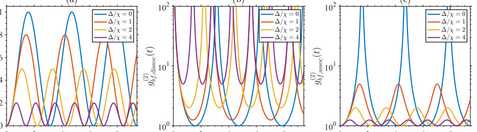
Summary. This theoretical paper models the coherent conversion between fermionic molecules and free atoms coupled to a bosonic matter wave field in an optical lattice Mott regime. By mapping the system dynamics onto the Jaynes--Cummings Hamiltonian, the authors derive exact solutions demonstrating bosonically enhanced coupling ($\propto \sqrt{N}$). This provides a powerful, solvable platform for studying atom-molecule chemistry using ultracold quantum gases.
Why it may be interesting. This work provides a direct, exactly solvable matter-wave realization of fundamental quantum optics physics (Jaynes--Cummings) using ultracold atoms in optical lattices. The confirmation of bosonic enhancement ($\sqrt{N}$) is crucial for understanding coherent processes in many-body systems.
Main problem. The paper addresses the coherent association and dissociation dynamics of fermionic heteronuclear dimers within a deep-lattice Mott regime.
Main result. It shows that the local dynamics map exactly to the Jaynes--Cummings Hamiltonian, yielding bosonically enhanced coupling ($\propto \sqrt{N}$) and providing exact analytic solutions for conversion probabilities.
Method. The methodology involves deriving an onsite three-component atom--molecule Hamiltonian and restricting the analysis to a fixed-number sector that allows mapping to the standard Jaynes--Cummings form.
Model / system. The system models fermionic heteronuclear dimers (molecules and free atoms) coupled to bosonic matter waves in optical lattices. The dynamics are analyzed by mapping the local Hamiltonian onto an effective two-level system interacting with a quantized oscillator field.
Key observables. Molecular dissociation probability ($P_N(t)$), atom-pair association probability, and site-dependent boson–fermion correlation functions ($g^{(2)}_{bf}$).
Important parameters / regimes. Detuning ($\Delta$), coupling strength ($\chi$), and the conserved number of bosonic atoms ($N$). The resonance condition is $\omega_m = \omega_f + \omega_b$.
Assumptions / limitations. The model assumes an idealized limit where onsite interactions are treated perturbatively (renormalizing detuning) but do not alter the fundamental solvable structure or the coupling scaling ($\chi\sqrt{N}$).
Figures summary. Not specified, but the notes detail derived analytical expressions for population dynamics and correlation functions based on the Rabi frequency $\Omega_N$.
Paper structure. The paper establishes the physical model (onsite Hamiltonian), derives the mapping to the Jaynes--Cummings form in specific fixed-number sectors ($N_{ ext{tot},f}=1$), solves the resulting dynamics analytically, and discusses extensions including onsite interactions.
We formulate and exactly solve a model for coherent association and dissociation of fermionic heteronuclear dimers in the deep-lattice Mott regime. Starting from the onsite three-component atom--molecule Hamiltonian, we show how the single-site model maps to the paradigmatic Jaynes--Cummings Hamiltonian from quantum optics. In this mapping, the fermionic molecular/free-atom sector forms an effective two-level system, while the bosonic atomic mode plays the role of the oscillator degree of freedom. We fix the conserved number of fermionic constituent atoms to one but allow an arbitrary conserved number $N$ of bosonic constituent atoms. The accessible doublet is then $|e,N-1\rangle\leftrightarrow|g,N\rangle$, and the coherent conversion coupling is bosonically enhanced to $χ\sqrt{N}$. Exact analytic expressions are derived for molecular dissociation, atom-pair association, mode populations, and boson--fermion correlation dynamics. The model provides a transparent matter-wave realization of Jaynes--Cummings physics in a heteronuclear Bose--Fermi system and an exactly solvable setting for understanding coherent atom--molecule conversion and bosonic enhancement in lattice systems.
Highlighted author(s): Andrew Lucas
Authors: Shuyan Zhou, Andrew Lucas
Type: theory · Category: quantum information and computing · PDF: https://arxiv.org/pdf/2608.07696v1
Analysis basis: full PDF text, analyzed in chunks
Topic relevance: quantum measurements 1/5
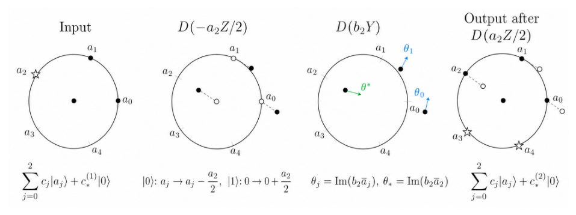
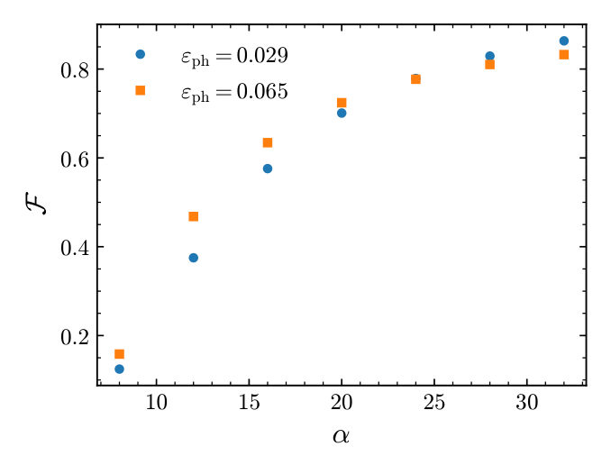
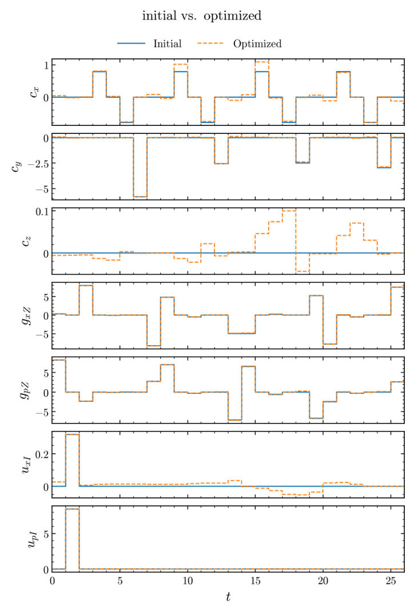
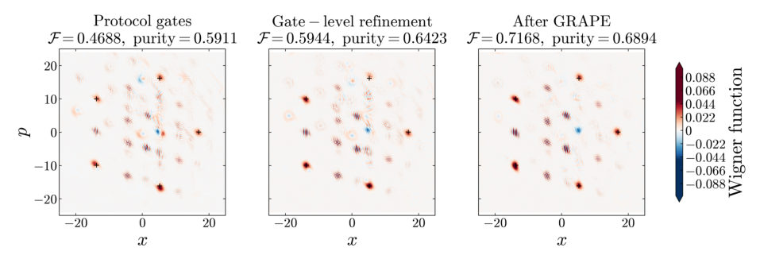
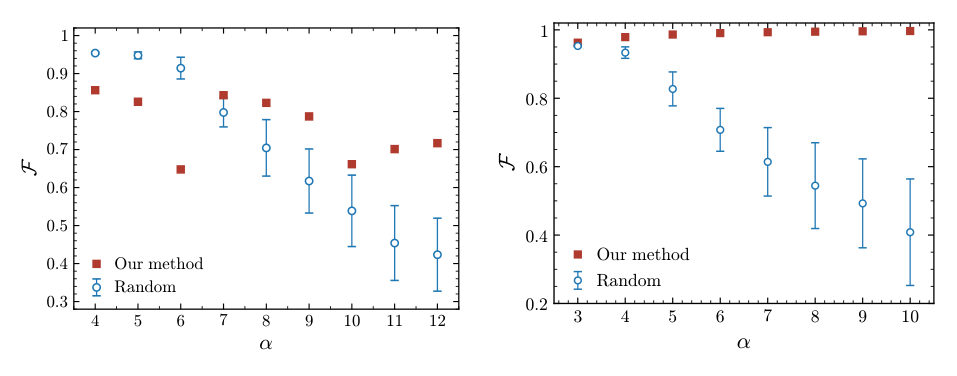
Summary. The paper analyzes the resource cost of preparing approximate $N$-fold Schrödinger cat states using a phase space instruction set. It proves that the required circuit depth scales with Euler's totient function $\varphi(N)$, which is significantly harder than previously assumed. This result shows that the chosen universal gate set is surprisingly inefficient for this simple state family.
Why it may be interesting. This work provides a sharp theoretical example demonstrating that even simple-looking quantum states can require exponentially deep circuits relative to naive estimates when restricted to specific universal gate sets, highlighting fundamental limitations in quantum computation models.
Main problem. The research determines the minimum circuit depth required to approximate a highly structured, $N$-fold rotationally invariant Schrödinger cat state using a specific continuous-variable universal gate set.
Main result. It establishes a lower bound on the circuit depth of $\Omega(\varphi(N))$ and provides an asymptotically optimal protocol saturating this bound for prime $N$.
Method. The analysis combines quantum information theory with number theory, utilizing properties of cyclotomic polynomials to derive necessary conditions for state preparation.
Model / system. The system involves a single bosonic mode coupled to ancillary qubits, operating in the continuous-variable regime. The target state is $|\alpha_N angle$, characterized by $N$ peaks arranged on a circle in phase space.
Key observables. Fidelity of preparation ($1 - |\langle \alpha_N | U | 0 angle|^2$), circuit depth, and total gate resource cost ($ ext{trun}$).
Important parameters / regimes. $N$ (number of cat state peaks), $\varphi(N)$ (Euler's totient function), $|\alpha|$ (displacement magnitude).
Assumptions / limitations. The analysis relies on linear independence arguments over the rationals ($\mathbb{Q}$) and assumes that certain error terms can be bounded by controlling phase alignment.
Figures summary. Not specified in detail, but the notes reference explicit protocols for $N=5$ and $N=3$, and general resource cost bounds (e.g., Equation A.117).
Paper structure. The paper proceeds by defining the setup using the phase space instruction set, proving the $\Omega(\varphi(N))$ hardness bound via number theory arguments, providing an explicit protocol for prime $N$, and finally discussing resource cost bounds for generalized cat states.
The phase space instruction set is a continuous-variable universal gate set involving single-qubit rotations and qubit-dependent displacements on a single boson. Using these gates, we prove that a circuit depth $\mathrmΩ(\varphi(N))$ is necessary to approximately prepare a large $N$-fold rotationally invariant Schrödinger cat state; here $\varphi(N) \gtrsim N/\log\log N$ is the Euler totient function. A protocol saturating this asymptotic bound on circuit depth is obtained for every prime number $N$. This protocol has an asymptotically optimal runtime, when the gates are generated by Hamiltonian evolution. Our results provide a sharp example where a universal gate set is surprisingly inefficient at preparing a simple family of states, and further imply that converting bosonic circuits between different universal gate sets can be extremely inefficient.
Authors: Kilian Kuhlbrodt, Olivier Huber, Oliver Breach, Weijie Li, Xiaodong Xu, Kenji Watanabe, Takashi Taniguchi, Martin Kroner, Siddharth A. Parameswaran, Atac Imamoglu
Type: experiment · Category: strongly correlated electrons · PDF: https://arxiv.org/pdf/2608.08937v1
Analysis basis: full PDF text, analyzed in chunks
Topic relevance: 🔥 analog quantum simulation 4/5 · 🔥 driven-dissipative phase transition 4/5 · correlated / nonlocal dissipation 3/5 · methods for driven-dissipative 3/5 · non-equilibrium universality 3/5 · quantum measurements 2/5 · scars & prethermalization 2/5 · Frenkel-Kontorova 1/5 · Keldysh / 2PI / non-Gaussian methods 1/5 · quantum optics experiment 1/5
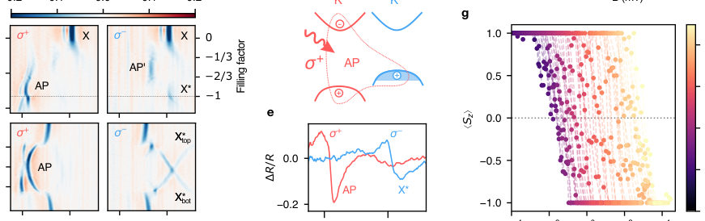
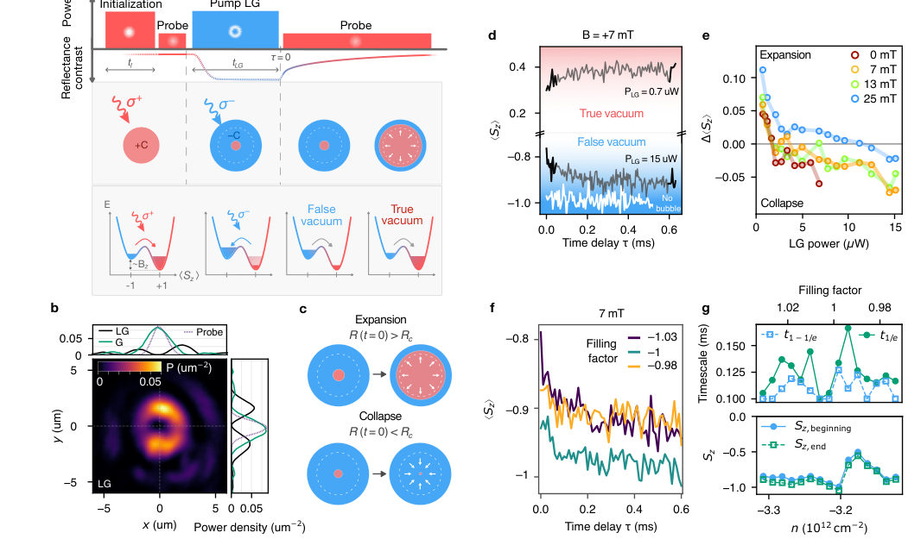
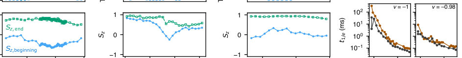
Summary. This experimental work explores false vacuum decay in doped Chern ferromagnets using moiré quantum materials. By optically creating and monitoring expanding/collapsing 'vacuum bubbles,' the authors show that the decay rate is extremely sensitive to doping levels near topological insulator fillings. This highlights how correlated electron physics, governed by topology, dictates non-equilibrium stability.
Why it may be interesting. The connection between topological invariants (Chern numbers) and non-equilibrium dynamics like vacuum decay provides a rich playground for open quantum systems theory, suggesting that topology can stabilize or destabilize metastable states in engineered solid-state platforms.
Main problem. The study investigates the underlying dynamics of metastable false vacuum decay, a process relevant across physics from cosmology to magnetism.
Main result. False vacuum decay is dramatically slowed down at commensurate filling factors near Chern insulator states when external magnetic fields are comparable to the coercive field. The decay dynamics are highly sensitive to the precise doping level around these topological states.
Method. The researchers employed an optical pump-probe scheme using circularly polarized Laguerre-Gauss beams to deterministically create and monitor a true vacuum bubble embedded within a metastable ferromagnetic state.
Model / system. The system is realized in doped Chern ferromagnets, specifically utilizing twisted molybdenum ditelluride (t-MoTe2) moiré quantum materials. These materials exhibit spin-valley polarized Stoner-like ferromagnetic states with non-zero Chern numbers.
Key observables. Spin-valley polarization ($\langle S_z angle$), domain wall dynamics, bubble collapse/expansion kinetics, and the decay timescale of magnetization.
Important parameters / regimes. Filling factor ($ u$) near Integer (ICI) and Fractional Chern Insulator (FCI) states; external magnetic field ($B$) relative to the coercive field ($B_c$); pump power controlling initial bubble size.
Assumptions / limitations. The study assumes that optical pumping can deterministically control the initial radius of the domain bubble, analogous to STED microscopy.
Figures summary. Figures illustrate the device setup and spectroscopic measurements; key figures show time-resolved spin polarization decay curves demonstrating lifetime maxima near specific filling factors ($ u$) and magnetic fields ($B$), comparing seeded vs. unseeded dynamics.
Paper structure. The paper progresses by establishing the physical platform (t-MoTe2) and measurement techniques, then systematically analyzing the bubble dynamics across different external magnetic field regimes ($B \ll B_c$, $B \approx B_c$, $B \gg B_c$) to map out the dependence of decay rates on doping ($ u$).
Even though metastable false vacuum decay is ubiquitous in physics, its underlying dynamics are still not well understood. Dissipative state preparation in moiré quantum materials provides an exceptional setting for exploring this physics since it allows the possibility of generating exotic quantum states that are not the ground state of the system Hamiltonian. Motivated by recent experiments demonstrating steady-state optical orientation of the spin-valley degree of freedom of holes, here we investigate dynamics of itinerant and Chern ferromagnets in the presence of an opposing magnetic field. Optical pumping using a circularly polarized Laguerre-Gauss beam allows us to deterministically prepare a true vacuum bubble embedded inside a metastable state. Depending on its initial size controlled by the pump power, we observe that the bubble collapses or expands due to an interplay between domain wall and bulk dynamics. For external magnetic fields comparable to the coercive field of ferromagnetism, we observe up to two-orders-of-magnitude prolongation of the spin polarization decay time at commensurate fillings corresponding to integer and fractional Chern insulator states. Our experiments reveal that the nonequilibrium dynamics of the ferromagnetic domains is substantially more sensitive to the precise filling factor around Chern insulator states than standard transport or optical measurements.
Authors: Quentin Thommen
Type: theory · Category: statistical mechanics · PDF: https://arxiv.org/pdf/2608.08074v1
Analysis basis: full PDF text, analyzed in chunks
Topic relevance: 🔥 Full counting statistics 4/5 · driven-dissipative phase transition 3/5 · methods for driven-dissipative 3/5 · Keldysh / 2PI / non-Gaussian methods 2/5 · non-equilibrium universality 2/5 · quantum measurements 2/5 · analog quantum simulation 1/5 · correlated / nonlocal dissipation 1/5 · scars & prethermalization 1/5




Summary. The paper analyzes particle transport in an open exclusion process modified by reversible pausing, finding that the low-frequency output noise peaks sharply when the average number of paused particles is near unity. This demonstrates that fluctuations are governed by slow internal dynamics (defects/jams) rather than just the mean flow rate, providing a quantitative measure for intermittent behavior.
Why it may be interesting. This work provides a detailed, non-equilibrium statistical mechanics framework for understanding how internal state fluctuations (pausing/jamming) can dominate transport observables like noise, even when mean flow rates are smoothly varying. This concept of 'slow defect kinetics' is highly relevant to open quantum systems.
Main problem. The study characterizes low-frequency output fluctuations (noise) in an open exclusion process when particles undergo reversible pausing, revealing a finite-size regime distinct from mean current behavior.
Main result. The noise exhibits a pronounced maximum when the mean number of paused particles ($N_p$) is of order unity ($\approx 1.5-2$), while the mean throughput continuously decreases with increasing $N_p$.
Method. Analysis involves using event-counting statistics, calculating window-dependent Fano factors, and employing minimal constant-birth/linear-death approximations to model the slow dynamics.
Model / system. The system is an open Totally Asymmetric Simple Exclusion Process (TASEP) where particles can reversibly switch between active and paused states. The dynamics are governed by hopping rates ($\epsilon$) and pausing/unpausing rates ($k_p, k_u$).
Key observables. Window-dependent Fano factor $F(T_w)$, mean current $J$, mean paused population $N_p$, and structural observables like the largest particle cluster size $ ext{C}_{\max}$.
Important parameters / regimes. The critical regime is characterized by $N_p \simeq 1.5-2$ and a scaling of the maximum pausing rate $k_{\max p} \propto L^{-1}$.
Assumptions / limitations. Key approximations include treating the pause dynamics via an auxiliary Poisson process and separating structural fluctuations from kinetic ones.
Figures summary. Figures illustrate the Fano factor peaking at specific paused populations, showing how low-frequency noise is organized by $N_p$ rather than just the mean current.
Paper structure. The paper progresses from defining the physical model and key diagnostics (Fano factor) to deriving theoretical scaling laws based on slow variables ($N_p$), culminating in identifying the specific order-one regime responsible for noise maximization.
Slow internal states reshape both the mean throughput and the temporal organization of a driven lattice gas. Exit-counting statistics reveal this effect in a finite open totally asymmetric simple exclusion process whose particles reversibly switch between active and paused states. Increasing pausing lowers the mean current smoothly, whereas the long-window Fano factor is strongly nonmonotonic. At the reference boundary rates, the maximum remains near a measured mean paused population \(N_p=Lρ_{\rm paused}\simeq1.5\)--\(2\) across lattice lengths L=50-500, while the corresponding pausing rate scales as \(k_p^{\rm max}\propto L^{-1}\). A minimal constant-birth, linear-death approximation translates an order-one collective crossover into this finite-size displacement and gives \(N_p^\star\simeq1.50\) in the independent-pause, strong-blocking limit. The simulations delimit this approximation: the pause number is overdispersed, and at fixed \(N_p\), slower unpausing increases both the correlation time and the noise amplitude. Residence-time and structural analyses further separate the relevant slow variables. The pause-free versus pause-containing residence-time scale tracks the fitted output-correlation time, whereas the noise amplitude follows fluctuations, rather than the mean size, of the largest particle cluster. Low-frequency output noise therefore identifies an intermittent finite-size regime shaped jointly by slow-defect kinetics and traffic-jam reorganization.
Authors: Amit Pradhan, Pratik Mullick, Parongama Sen
Type: theory · Category: statistical mechanics · PDF: https://arxiv.org/pdf/2608.08324v1
Analysis basis: full PDF text, analyzed in chunks
Topic relevance: 🔥 non-equilibrium universality 4/5 · driven-dissipative phase transition 3/5 · methods for driven-dissipative 3/5 · Keldysh / 2PI / non-Gaussian methods 2/5 · analog quantum simulation 2/5 · correlated / nonlocal dissipation 2/5 · quantum measurements 2/5 · scars & prethermalization 1/5
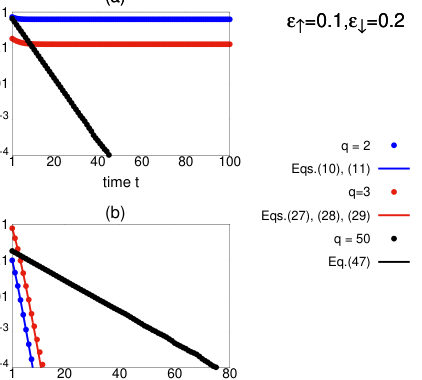
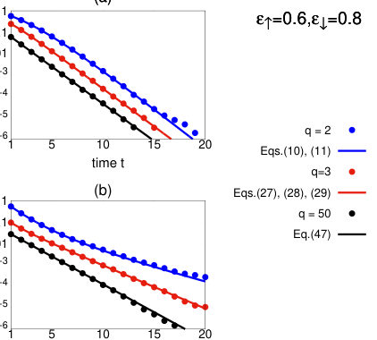
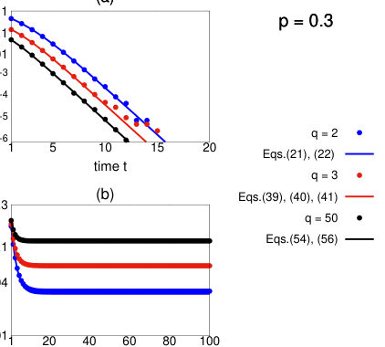
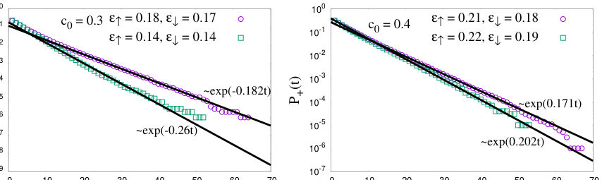
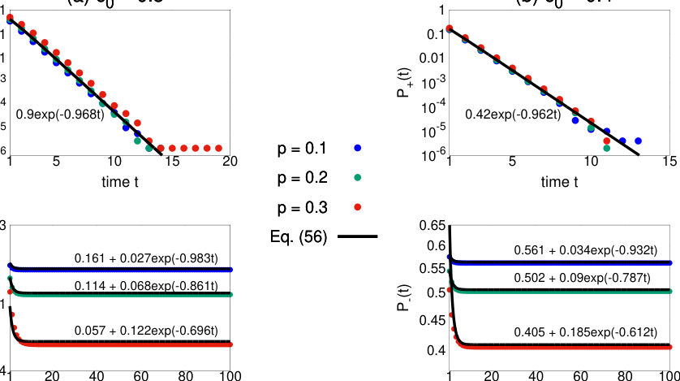
Summary. This work analyzes persistence probability in biased $q$-voter models using mean-field theory. The authors derive analytical solutions for the time evolution of consensus maintenance probabilities, linking these asymptotic behaviors directly to the stable fixed points characterizing the system's phase diagram. It provides a rigorous mathematical framework for understanding opinion dynamics far from equilibrium.
Why it may be interesting. While focused on opinion dynamics, the mathematical framework—analyzing non-equilibrium steady states and decay rates in interacting particle systems—is highly relevant to understanding relaxation dynamics in complex quantum many-body systems or open quantum systems far from equilibrium.
Main problem. The study focuses on quantifying persistence probability—the likelihood that agents maintain their initial opinion over time—within biased $q$-voter models.
Main result. The paper derives general formalisms and specific closed-form solutions for the persistence probabilities, showing a strong correlation between these asymptotic values and the fixed points of the underlying dynamical systems.
Method. The analysis employs mean-field theory combined with deriving rate equations for the persistence probabilities using the chain rule. Results are validated through Monte Carlo simulations.
Model / system. Two nonlinear $q$-voter models (DMSS and MS) with binary opinions ($S=\pm 1$) on a fully connected network. Dynamics are governed by biased choices when the local panel is non-unanimous.
Key observables. Persistence probabilities for positive and negative opinions, $P_+(t)$ and $P_-(t)$; saturation values $P_{\pm}(t o \infty)$.
Important parameters / regimes. $q$ (voter parameter), $\epsilon_\uparrow, \epsilon_\downarrow$ (bias parameters for DMSS), and $p$ (bias parameter for MS).
Assumptions / limitations. The mean-field theory is assumed to be reliable due to the fully connected network structure. Closed-form solutions are limited to specific values of $q$ ($q=2, 3$) or the infinite limit.
Figures summary. Figures show time evolution plots comparing simulation data to analytical theory for $P_{\pm}(t)$ (e.g., for $q=2, 3$), and heatmaps illustrate how saturation values vary across parameter space $(\epsilon_\uparrow, \epsilon_\downarrow)$.
Paper structure. The paper first establishes the general formalism using rate equations derived via the chain rule. It then provides explicit solutions for specific cases ($q=2, 3$) for both models, followed by a detailed analysis of phase diagrams based on asymptotic behavior.
Persistence probability in opinion dynamics models estimates the tendency of the agents not to change their initial opinion till the present time. Here we consider two nonlinear q-voter models with binary opinions, where the dynamics are governed by a biased choice when the q panel is not unanimous. The models are studied for different parameter ranges corresponding to the known stationary states. Mean field theory and numerical simulations are used to compute the persistence probability for the two types of opinion separately. The long time behavior in general is either a saturation or a decay that can be approximated by an exponential form, depending on the chosen parameters. Based on this, phase diagrams in the parameter space are presented for both the models. The regions in the phase diagrams indicate a strong correlation with the behavior of fixed points in the corresponding models, which is non-trivial as far as the persistence probability is concerned.
Authors: Pedro Linck, Nadja K. Bernardes
Type: theory · Category: quantum information and computing · PDF: https://arxiv.org/pdf/2608.07695v1
Analysis basis: full PDF text, analyzed in chunks
Topic relevance: 🔥 quantum measurements 4/5 · correlated / nonlocal dissipation 3/5 · driven-dissipative phase transition 3/5 · methods for driven-dissipative 3/5 · Dicke superradiance 2/5 · Keldysh / 2PI / non-Gaussian methods 1/5 · analog quantum simulation 1/5 · non-equilibrium universality 1/5 · superradiant laser 1/5
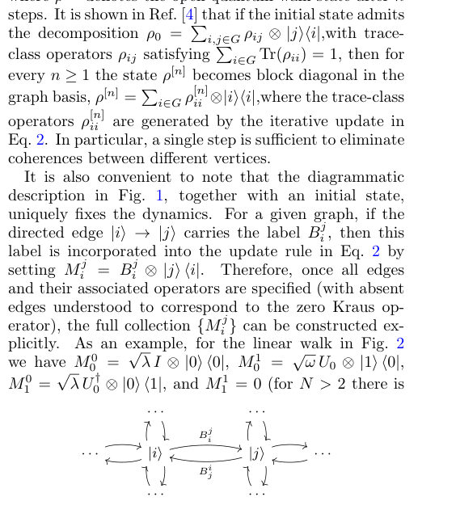
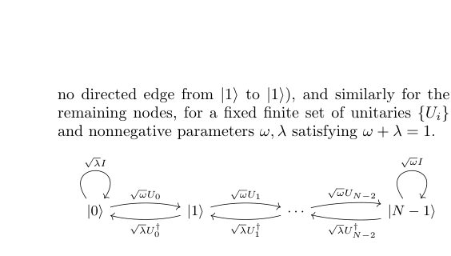
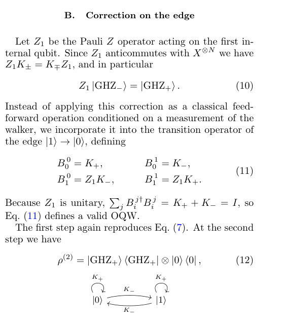
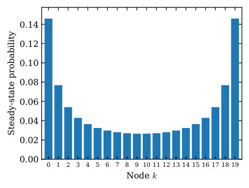
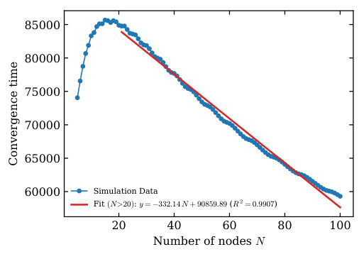
Summary. The paper introduces Open Quantum Walks (OQWs) as a powerful tool for designing protocols to prepare entangled states like Dicke and GHZ states. By coupling graph dynamics to internal qubits via engineered dissipation, it achieves deterministic preparation schemes even under imperfect measurements. This framework unifies quantum trajectory simulation with structured graph models.
Why it may be interesting. This work provides a physically transparent and general graphical framework (OQW) to analyze state preparation protocols, bridging concepts from open quantum systems theory with structured quantum information tasks like generating multipartite entanglement.
Main problem. The paper develops protocols for preparing specific entangled quantum states (Dicke, W, GHZ) using the framework of Open Quantum Walks (OQWs). It aims to provide a general method applicable when state preparation relies on nonunitary dynamics.
Main result. Protocols are successfully constructed for Dicke and GHZ states; specifically, an OQW prepares an ensemble of Dicke states, and a two-node protocol deterministically generates GHZ states without requiring direct measurement of the walker's position.
Method. The core method involves modeling dissipation and state evolution using Open Quantum Walks, which reformulates quantum trajectories via Kraus operators derived from engineered environmental coupling. Convergence rates are analyzed using spectral gap calculations.
Model / system. The model is an OQW that couples transitions on a graph (the walker's position) to internal degrees of freedom representing the entangled state qubits. Specific topologies include ring-shaped graphs for Dicke states and simple two-node graphs for GHZ states.
Key observables. Fidelity ($F$) of prepared states, steady-state probabilities ($\pi_k$), and the spectral gap ($\Delta(\eta)$) governing convergence rates.
Important parameters / regimes. The degree of measurement sharpness ($\eta$), system size ($N$), and parameters related to dissipation/coupling strengths ($p, A$).
Assumptions / limitations. The analysis often assumes weak measurements or specific coupling structures (e.g., deriving operators from Lindblad forms). The method is shown to embed quantum trajectories but is not claimed to be a computational speedup.
Figures summary. Figures illustrate the general OQW structure on graphs, show diagrams for linear and ring-shaped models, and detail the mathematical setup using transition operators derived from jump/Lindblad operators.
Paper structure. The paper introduces the OQW framework for state preparation, details specific protocols for Dicke states (using a ring graph) and GHZ states (using a two-node graph), analyzes convergence rates under measurement imperfections ($\eta$), and concludes by showing the natural embedding of quantum trajectories into this walk structure.
Open quantum walks couple transitions on a graph to quantum operations on an internal degree of freedom. We use this structure to formulate protocols for quantum state preparation with nonunitary Kraus operators. We construct a ring-shaped OQW preparing an ensemble of Dicke states, with W states appearing as the single-excitation case, from which any individual Dicke state is recovered by postselecting the walker position; its convergence is governed by the spectral gap of the underlying Markov chain, for which we obtain a closed-form approximate expression. For GHZ states we present a two-node protocol using Kraus operators built from projective measurements that prepares them deterministically without requiring a measurement of the walker, and analyze how unsharp measurements affect the results and the convergence of the walk. We also show that the quantum trajectories method embeds naturally in the OQW framework as a graph-structured collision model.
Authors: B. Q. Song
Type: theory · Category: statistical mechanics · PDF: https://arxiv.org/pdf/2608.08269v1
Analysis basis: full PDF text, analyzed in chunks
Topic relevance: 🔥 non-equilibrium universality 4/5 · Keldysh / 2PI / non-Gaussian methods 3/5 · driven-dissipative phase transition 3/5 · methods for driven-dissipative 3/5 · scars & prethermalization 2/5 · analog quantum simulation 1/5 · correlated / nonlocal dissipation 1/5 · quantum measurements 1/5
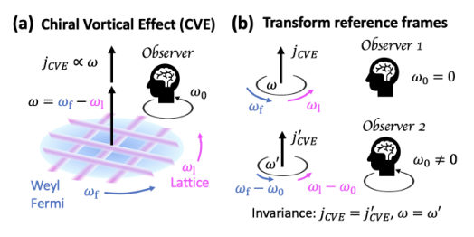
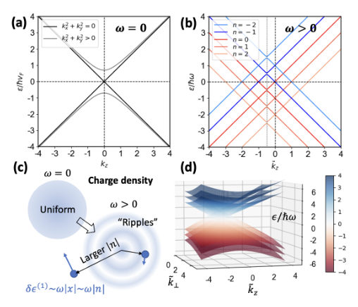
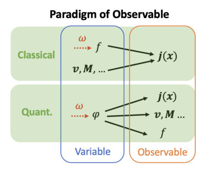
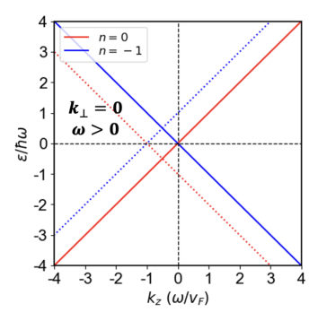
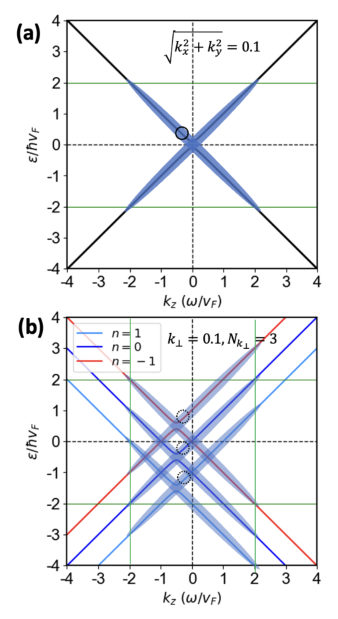
Summary. This work pioneers a fully quantum description of the Chiral Vortical Effect (CVE) using Weyl semimetals. By solving for microscopic wavefunctions rather than relying on semiclassical distributions, the authors prove that CVE is fundamentally a non-equilibrium process. This provides a powerful tool to detect genuine quantum transport phenomena in materials.
Why it may be interesting. While focused on condensed matter transport, the core methodology involves non-equilibrium dynamics, Floquet theory, and the rigorous comparison between quantum evolution and classical/statistical approximations, which are central themes in open quantum systems.
Main problem. To develop a fully quantum formulation for the Chiral Vortical Effect (CVE), moving beyond existing semiclassical descriptions.
Main result. The CVE distribution is shown to be over a ground-state-free Floquet spectrum, confirming it as a non-equilibrium phenomenon distinct from thermal equilibrium. The theory also predicts novel quantum effects when semi-classical approximations fail.
Method. The authors solve the exact evolution of microscopic spinful wavefunctions using a time-dependent Hamiltonian approach and compare results against established semiclassical kinetic theories.
Model / system. The study uses Weyl semimetals as an experimentally accessible platform. The system is modeled by a non-relativistic quantum Hamiltonian incorporating chiral fermion dynamics and an axial rotation term ($\hat{V}$).
Key observables. Axial current ($j_z$), energy spectrum ($\epsilon$), and the quantum distribution function ($\hat{f}_{CVE}$)
Important parameters / regimes. Rotation frequency ($\omega$), Fermi velocity ($v_F$), Chemical potential ($\mu$), System size ($R$)
Assumptions / limitations. The semiclassical approximation is only valid under three strict conditions: slow rotation, high chemical potential, and isotropic symmetry.
Figures summary. Figure 2 compares the energy spectra for the non-rotating case ($\omega=0$) versus the rotating case ($H$), showing Floquet-type spectral features.
Paper structure. The paper progresses from establishing the need for a quantum formulation, deriving the Hamiltonian respecting physical symmetries (like observer rotation invariance), calculating observables using wavefunctions in Hilbert space, and finally comparing these results to known semi-classical limits.
The chiral vortical effect (CVE) is the generation of an axial current in a rotating Weyl fermion; its description is presently based on semiclassical frameworks. In this work, we develop a fully quantum formulation for CVE, solving the exact evolution of microscopic spinful wavefunctions, which enables a bottom-up quantitative test of semi-classical theories and postulated distributions $f_{\text{CVE}}$ in different reference frames. Notably, it shows that $f_{\text{CVE}}$ is over a ground-state-free Floquet spectrum, qualitatively distinct from a thermal equilibrium distribution (i.e., fermi form $f_F$), underscoring CVE as a non-equilibrium phenomenon, distinguished from other chiral transports. The $f_F$ only approximately holds when three conditions are simultaneously fulfilled: (1) slow rotation $ωR/v_F\ll 1$, (2) high chemical potential $μ/(\hbar v_F R)\gg 1$, (3) isotropic symmetry, where $R$ is the size, $v_F$ is fermi velocity. In these conditions, the theory recovers established semiclassical results, including the current-response coefficients and the magnetization contribution; otherwise, it uncovers quantum phenomena such as ``void states", deviation from the semiclassical formula $j_{\text{CVE}} \sim μ^2$, a $v_F$-independent charge pumping. The theory is based on semimetals, providing more experimentally accessible detection than fundamental Weyl particles.
Authors: Stefano Ragni, Osor S. Barišić, Naoto Nagaosa, Andrey S. Mishchenko
Type: theory · Category: strongly correlated electrons · PDF: https://arxiv.org/pdf/2608.09883v1
Analysis basis: full PDF text, analyzed in chunks
Topic relevance: 🔥 Keldysh / 2PI / non-Gaussian methods 4/5 · driven-dissipative phase transition 3/5 · methods for driven-dissipative 3/5 · Frenkel-Kontorova 2/5 · non-equilibrium universality 2/5 · correlated / nonlocal dissipation 1/5 · quantum measurements 1/5 · scars & prethermalization 1/5
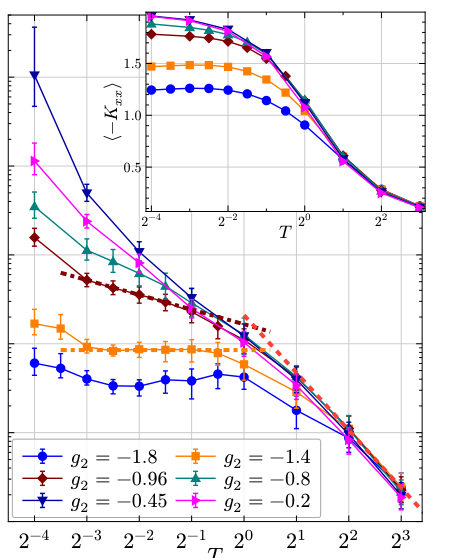
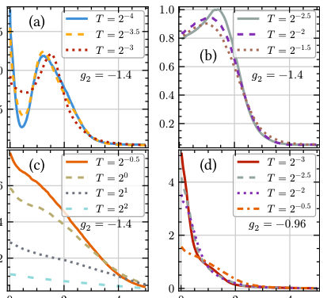
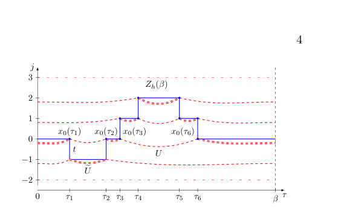
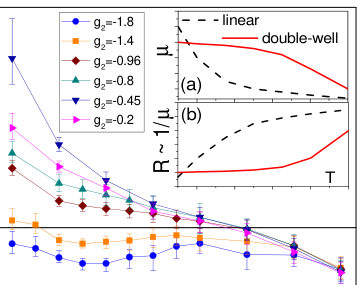
Summary. The authors develop an advanced X-propagator method to study polaron mobility in materials modeled by a double-well potential. They demonstrate that this nonlinear coupling mechanism correctly predicts the anomalous concave temperature dependence of mobility observed in polar oxides like SrTiO3. This supports the idea that anharmonic lattice dynamics are key to understanding transport anomalies beyond simple linear models.
Why it may be interesting. This work provides a detailed theoretical framework for understanding anomalous transport phenomena in polar materials by incorporating strong anharmonicity via nonlinear coupling terms, which is crucial for modeling soft modes in condensed matter systems.
Main problem. To theoretically explain the anomalous temperature dependence of polaron mobility observed in dilute polar metals, such as SrTiO3.
Main result. The model successfully reproduces an anomalous concave temperature dependence for mobility and predicts spectral weight redistribution upon coupling to a nonlinear lattice potential.
Method. Development and application of an unbiased X-propagator method to calculate finite-temperature optical conductivity and dc mobility for arbitrary electron-phonon interactions.
Model / system. The system is modeled as a polaron coupled to a double-well lattice potential, which serves as a minimal model for strongly anharmonic polar materials relevant to oxides like SrTiO3.
Key observables. Static dc mobility (μ), optical conductivity $\sigma(\omega)$, and mean free path ($\lambda_{ ext{MFP}}$).
Important parameters / regimes. Coupling strength parameters ($g_2$), temperature regimes (low, moderate, high T), and the violation of the Mott-Ioffe-Regel limit.
Assumptions / limitations. The use of a double-well potential to capture anharmonicity, and the extension of zero-temperature formalisms via the X-propagator method to finite temperatures.
Figures summary. Figures illustrate $\mu$ vs. T showing three distinct regimes (confinement, barrier competition, high T), spectral weight redistribution in $\sigma(\omega)$ across these regimes, and comparisons between linear and nonlinear coupling models.
Paper structure. The paper develops the X-propagator method, applies it to the double-well model, analyzes the resulting temperature dependence of mobility ($\mu(T)$) across distinct physical regimes, and compares findings against experimental observations in SrTiO3.
We develop an unbiased X-propagator method for calculating finite-temperature optical conductivity $σ(ω)$ and dc mobility $μ$ for arbitrary nonlinear electron-phonon interaction. We apply it to a polaron coupled to a double-well lattice potential, a minimal model for strongly anharmonic polar materials. At moderate coupling, the mobility exhibits three temperature regimes associated with confinement within one well, thermal competition with the barrier, and barrier-insensitive high-temperature dynamics. This sequence produces a concave temperature dependence of the mobility that is absent in conventional linear-coupling polaron models. At strong coupling, the mobility becomes nonmonotonic, and its temperature evolution is reflected in a characteristic redistribution of optical spectral weight. For parameters relevant to SrTiO$_3$, our results qualitatively reproduce both the anomalous concave mobility and the onset of violation of the Mott-Ioffe-Regel limit, thereby supporting nonlinear coupling to a soft anharmonic lattice mode as a microscopic mechanism for anomalous transport in dilute polar metals.
Authors: Jiangrong Wen, Qidong Yuan, Zi-Xiang Hu, Jian-Jun Dong
Type: theory · Category: statistical mechanics · PDF: https://arxiv.org/pdf/2608.07882v1
Analysis basis: full PDF text, analyzed in chunks
Topic relevance: 🔥 driven-dissipative phase transition 4/5 · analog quantum simulation 3/5 · methods for driven-dissipative 3/5 · non-equilibrium universality 3/5 · correlated / nonlocal dissipation 2/5 · Frenkel-Kontorova 1/5 · Keldysh / 2PI / non-Gaussian methods 1/5
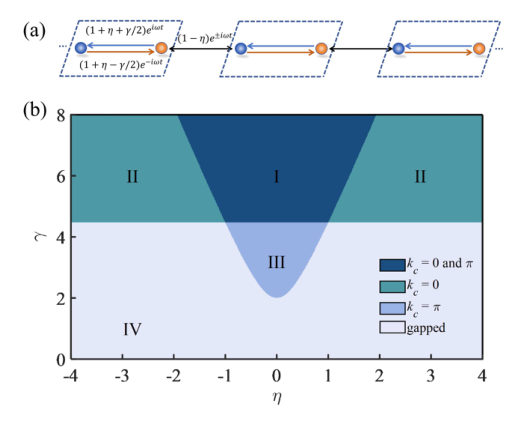
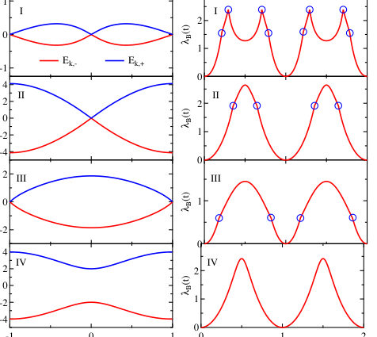
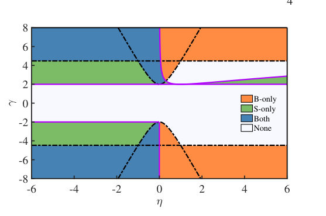
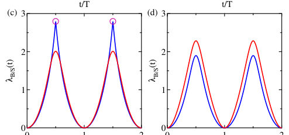
Summary. The paper investigates Dynamical Quantum Phase Transitions (DQPTs) in a driven non-Hermitian SSH chain by comparing two mathematical formulations: biorthogonal and self-normal. The key finding is that these two approaches are not equivalent, revealing a regime where only the biorthogonal method predicts a transition. This establishes a crucial theoretical distinction for understanding non-equilibrium physics in open quantum systems.
Why it may be interesting. This work directly addresses non-equilibrium quantum dynamics in open/non-Hermitian systems, which are highly relevant for understanding dissipation, gain, and topological properties in modern AMO platforms like photonics or superconducting circuits.
Main problem. To fundamentally distinguish between Dynamical Quantum Phase Transitions (DQPTs) identified using biorthogonal versus self-normal inner products in non-Hermitian systems.
Main result. The authors demonstrate a finite regime where only the biorthogonal formulation predicts a DQPT, showing that the choice of overlap structure dictates the existence of dynamical criticality. This establishes a fundamental distinction between the two types of transitions.
Method. Theoretical analysis using the Loschmidt echo formalism applied to a periodically driven non-Hermitian SSH chain, comparing the rates derived from biorthogonal and self-normal inner products.
Model / system. The study uses an exactly solvable, periodically driven non-Hermitian Su-Schrieffer-Heeger (SSH) chain model. The dynamics are analyzed via its effective Floquet Hamiltonian in momentum space.
Key observables. Biorthogonal and self-normal Loschmidt echo rates ($\lambda_B(t)$ and $\lambda_S(t)$), which exhibit nonanalyticities signaling a DQPT.
Important parameters / regimes. Dimerization ($\eta$) and intracell nonreciprocity ($\gamma$), which define the parameter space for the transition regimes.
Assumptions / limitations. The analysis is performed on an exactly solvable model (SSH chain) using specific time-evolution parameters ($\hbar=1, \omega=2$).
Figures summary. Figure 1 schematically shows spectral regimes separated by exceptional lines in the parameter space $(\eta, \gamma)$. Figure 3 illustrates the comparison of $\lambda_B(t)$ and $\lambda_S(t)$ across different spectral conditions.
Paper structure. The paper first introduces the problem of DQPTs in non-Hermitian systems. It then develops the mathematical framework using both biorthogonal and self-normal Loschmidt echoes for the SSH chain. The core is the comparison, leading to the identification of the Biorthogonal-only regime and a discussion of the differing temporal structures of critical times.
Non-Hermitian dynamical quantum phase transitions (DQPTs) are intrinsically sensitive to the choice of inner product under nonunitary time evolution. Although the biorthogonal formulation based on associated states provides a normalized Loschmidt echo with a probabilistic interpretation, previous studies have found biorthogonal and self-normal DQPTs to occur in the same parameter regimes, suggesting that the two forms of dynamical criticality are concomitant. Here we demonstrate that this is not the case. In an exactly solvable periodically driven non-Hermitian Su-Schrieffer-Heeger chain, we uncover a finite biorthogonal-only Floquet DQPT regime, where the biorthogonal Loschmidt rate becomes nonanalytic while the self-normal Loschmidt rate remains smooth. The critical conditions are obtained analytically, showing that the onset of biorthogonal Floquet DQPTs is locked to the exceptional lines of the effective Floquet Hamiltonian, whereas self-normal criticality has no corresponding spectral boundary. Moreover, for each critical momentum, the biorthogonal DQPT exhibits a pair of critical times within every driving period, whereas the self-normal DQPT exhibits only one. Our results establish a fundamental distinction between biorthogonal and self-normal DQPTs, thereby opening a route toward new nonequilibrium quantum phenomena in non-Hermitian systems.
Authors: O. Farion, M. Pourzand, J. M. McGuirk
Type: both · Category: quantum gases · PDF: https://arxiv.org/pdf/2608.07840v1
Analysis basis: full PDF text, analyzed in chunks
Topic relevance: 🔥 analog quantum simulation 4/5 · methods for driven-dissipative 3/5 · non-equilibrium universality 3/5 · driven-dissipative phase transition 2/5 · quantum measurements 2/5 · Frenkel-Kontorova 1/5 · Keldysh / 2PI / non-Gaussian methods 1/5 · correlated / nonlocal dissipation 1/5

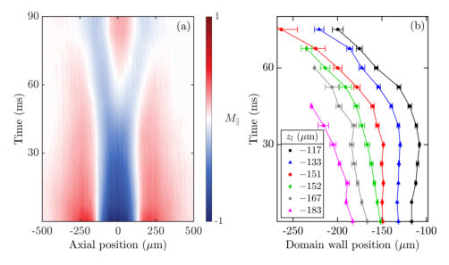
Summary. The authors demonstrate precise, tunable control over the movement of magnetic domain walls within a Bose gas by engineering the system's spin coherence and phase structure. They show that manipulating initial polarization can reverse or accelerate wall motion, confirming that coherence acts as a powerful tool for programming spin transport in atomtronic devices.
Why it may be interesting. This work directly applies concepts from non-equilibrium many-body physics (like domain wall dynamics) to an ultracold atomic platform, providing concrete experimental evidence for programming spin transport using coherence—a key area in AMO and quantum simulation.
Main problem. The central challenge is demonstrating and controlling domain-wall transport, which act as carriers of spin information, using coherence and phase engineering in an ultracold gas.
Main result. Tunable control over domain-wall motion—including reversal and acceleration—is achieved by manipulating the spin current imbalance through polarization rotation. The dynamics exhibit a crossover between exchange-stabilized and diffusion-dominated regimes.
Method. The study combines experimental measurements (absorption imaging, Ramsey spectroscopy) to track magnetization profiles with numerical solutions of a quantum Boltzmann equation to model the underlying physics.
Model / system. The system is a weakly interacting nondegenerate ultracold Bose gas ($ ext{}^{87} ext{Rb}$) trapped in 1D, forming a pseudo-spin-1/2 texture between two hyperfine ground states. The dynamics are modeled using a quantum Boltzmann equation for the magnetization density.
Key observables. Domain wall trajectories, longitudinal magnetization ($M_{\parallel}$), transverse spin magnitude and phase ($\phi$), and domain wall velocity ($v_{dw}$).
Important parameters / regimes. Polarization rotation ($P$), transverse phase gradients ($\partial z\phi$), and the balance between exchange-stabilized and diffusion-dominated regimes.
Assumptions / limitations. The analysis initially focused on domains with negative initial positions, and extremely small domain wall widths were avoided due to the Castaing instability.
Figures summary. Figures illustrate the spatiotemporal evolution of magnetization profiles, showing how polarization rotation controls trajectories (including reversals), and map out the crossover in domain-wall velocity between slow/exchange-stabilized and fast/diffusive regimes.
Paper structure. The paper establishes the physical platform and problem, details measurement techniques for spin textures, presents results demonstrating control via coherence and phase engineering, models the dynamics using a quantum Boltzmann equation, and concludes by establishing the utility of this method for atomtronic systems.
Domain walls are carriers of spin transport whose controlled manipulation underlies a wide range of spintronic and information-processing technologies. Here we demonstrate tunable domain-wall transport in a weakly interacting nondegenerate ultracold Bose gas. We initialize a three-domain pseudo-spin-1/2 texture and observe spontaneous propagation of long-lived domain walls driven by exchange-mediated spin currents. By varying the orientation of the spin domains, we control the balance of spin currents across the walls and thereby tune their trajectories, including reversals of the initial direction of motion. Measurements reveal a crossover from an exchange-stabilized regime, in which coherent spin-exchange collisions suppress wall motion, to a diffusion-dominated regime characterized by rapid transport at thermal velocities. Numerical solutions of a quantum Boltzmann equation reproduce the observed dynamics and identify transverse phase gradients as an important control parameter governing domain-wall propagation. These results establish coherence and phase engineering as tools for programming spin transport in ultracold gases and provide a route toward controllable domain-wall dynamics in atomtronic systems.
Authors: Achraf Khoudiri, Asghar Ullah, Abderrahim El Allati, Özgür E. Müstecaplıoğlu
Type: theory · Category: statistical mechanics · PDF: https://arxiv.org/pdf/2608.09693v1
Analysis basis: full PDF text, analyzed in chunks
Topic relevance: 🔥 correlated / nonlocal dissipation 4/5 · driven-dissipative phase transition 3/5 · methods for driven-dissipative 3/5 · analog quantum simulation 2/5 · non-equilibrium universality 2/5 · Tavis-Cummings & cavity-many-emitter 1/5 · quantum measurements 1/5 · scars & prethermalization 1/5
Summary. This paper explores how engineered dissipation can optimize the performance of quantum batteries modeled by the Ising chain. By comparing local versus collective environmental coupling, the authors demonstrate that collective dissipation creates symmetry-protected dark and metastable states. These protected subspaces significantly enhance extractable work (ergotropy), with the antiferromagnetic phase showing superior energy harvesting capabilities.
Why it may be interesting. This work directly addresses non-equilibrium thermodynamics in many-body systems, providing concrete mechanisms (dark/frozen states) to enhance energy storage capacity beyond simple thermal considerations, which is highly relevant to open quantum system dynamics.
Main problem. The study investigates how symmetry-protected dark states and metastable frozen states influence the autonomous charging dynamics and overall performance of open quantum batteries.
Main result. Collective dissipation is shown to enhance ergotropy and charging power by generating an extended protected Hilbert space; specifically, the antiferromagnetic configuration yields considerably larger extractable work compared to the ferromagnetic phase.
Method. The analysis involves comparing local versus collective dissipation effects on a quantum battery modeled by the transverse-field Ising Hamiltonian using the GKSL master equation framework.
Model / system. The system is an open quantum battery described by the transverse-field Ising model, $ ext{H}_B$, evolving under a master equation incorporating both local and collective dissipation mechanisms.
Key observables. Ergotropy (extractable work), charging power, multiplicity of dark states (following Catalan sequence for even N), and active Hilbert-space fraction.
Important parameters / regimes. System size ($N$), temperature ($T$), magnetic phase (Ferromagnetic/Antiferromagnetic).
Assumptions / limitations. The dynamics are treated under the Markovian approximation, and finite-resource effects are neglected.
Figures summary. Figures compare energy level time evolution and ergotropy over time for collective versus local dissipation in both AFM and FM regimes, highlighting enhanced work extraction with collective coupling.
Paper structure. The paper systematically compares the dynamics under local vs. collective dissipation, derives the multiplicity of dark states analytically, quantifies performance using ergotropy, and concludes by establishing protected sectors as key optimization resources for quantum batteries.
We investigate the role of symmetry-protected dark states and metastable-like frozen states in the autonomous charging dynamics of open quantum batteries described by a transverse-field Ising model. By comparing local and collective dissipation over a range of system sizes, temperatures, and magnetic phases, we demonstrate that collective dissipation generates symmetry-protected dark states together with a much larger set of frozen (metastable) states, forming an extended protected Hilbert space. We derive the multiplicity of the collective dark sector analytically, showing that it follows the Catalan sequence for even system sizes, while such states are absent for odd sizes. Our results show that collective dissipation can enhance ergotropy and charging power, with its advantage depending on temperature, magnetic phase, and system size. While the number of dark and frozen states is identical in the ferromagnetic and antiferromagnetic phases, the achievable ergotropy differs substantially because of the different spectral locations of these protected states. In particular, the antiferromagnetic configuration exhibits considerably larger extractable work owing to the favorable positioning of the protected subspaces within the many-body energy spectrum. Finally, we analyze the active Hilbert-space fraction and show that metastable protection provides an effective mechanism for suppressing dissipative losses while preserving efficient charging pathways. These results establish the dark-state and frozen-state sectors as key resources for optimizing the performance of open quantum batteries through engineered dissipation.
Authors: Zekun Li, Jia Liu, Xiao-Ping Wang, Jing-Jun Zhang
Type: theory · Category: statistical mechanics · PDF: https://arxiv.org/pdf/2608.07995v1
Analysis basis: full PDF text, analyzed in chunks
Topic relevance: 🔥 Keldysh / 2PI / non-Gaussian methods 4/5 · driven-dissipative phase transition 3/5 · methods for driven-dissipative 3/5 · non-equilibrium universality 3/5 · quantum measurements 2/5 · correlated / nonlocal dissipation 1/5 · scars & prethermalization 1/5
Summary. This work develops a method to calculate flavor–kinetic entanglement entropy in dense, thermal media by adapting tools from scattering theory. This entanglement measure is shown to be directly proportional to collision rates derived from kinetic equations. Crucially, this diagnostic tool can characterize phase transitions—both first-order and continuous—in a manner distinct from traditional thermodynamic order parameters.
Why it may be interesting. It provides a concrete link between quantum information measures (entanglement) and macroscopic thermodynamic/kinetic properties (phase transitions), offering a new type of order parameter for non-equilibrium systems.
Main problem. The research aims to extend quantum information tools, specifically entanglement entropy, from vacuum processes to finite-density, non-equilibrium environments like the early universe.
Main result. The flavor–kinetic entanglement entropy serves as a novel collision-based diagnostic tool capable of detecting phase transitions by exhibiting distinct discontinuities or nonanalytic temperature derivatives.
Method. The authors relate the entanglement entropy to an occupation-weighted collision probability derived from the directed reaction-density kernel used in kinetic theory (Boltzmann equation).
Model / system. The framework is applied to general particle decay and scattering processes, using a specific flavor–kinetic bipartition of the Hilbert space. A proof-of-principle application uses an O(N) singlet-scalar extended model.
Key observables. Flavor–Kinetic Entanglement Entropy ($E_{fk}$), collision probabilities, and reaction density kernels ($\Gamma$).
Important parameters / regimes. Finite particle density, temperature (T), coupling constants, and the characteristic time scales of scattering/decay processes.
Assumptions / limitations. The analysis relies on tracing over kinematic degrees of freedom to obtain the leading entanglement entropy, and it assumes an incoherent kinetic ensemble for the background state.
Paper structure. The paper builds from extending the scattering-entanglement dictionary to finite density by defining the flavor–kinetic bipartition. It derives $E_{fk}$ in terms of collision probabilities, applies this diagnostic tool to an O(N) model, and analyzes how the resulting entropy signals phase transitions.
We extend the scattering-entanglement dictionary to finite-density environments by investigating the flavor--kinetic bipartition of the Hilbert space. We show that tracing over kinematic degrees of freedom maps the total branch-changing transition probability directly onto the leading flavor--kinetic linear entanglement entropy. At finite density, the vacuum branch-changing probability is replaced by an occupation-weighted collision probability, built from the same directed reaction-density kernel that enters the integrated Boltzmann equation. The resulting observable is the bath-averaged flavor--kinetic entanglement entropy of a pair sampled from the medium. As a proof of principle, this framework is applied to an $O(N)$ singlet-scalar extended model to probe thermal phase transitions. In the examples studied, the resulting entanglement entropy serves as a collision-based phase-transition-type diagnostic, exhibiting a finite discontinuity across a first-order phase transition and a nonanalytic temperature derivative for continuous transitions. These examples suggest a novel way to characterize thermal phase structures, distinct from traditional thermodynamic order parameters.
Authors: Kah Jen Wo, Pavel A. Dmitriev, Karthik Dasigi, Fumiya Hanamura, Steven Touzard
Type: experiment · Category: quantum information and computing · PDF: https://arxiv.org/pdf/2608.08221v1
Analysis basis: full PDF text, analyzed in chunks
Topic relevance: 🔥 QC/QI experiment 4/5 · quantum optics experiment 3/5 · analog quantum simulation 2/5 · correlated / nonlocal dissipation 2/5 · quantum measurements 2/5 · Tavis-Cummings & cavity-many-emitter 1/5 · driven-dissipative phase transition 1/5 · interference shaping light 1/5 · methods for driven-dissipative 1/5
Summary. The researchers engineered a novel photonic platform by bonding an optimized $ ext{Er}^{3+}: ext{CaWO}_4$ crystal onto a tunable lithium niobate resonator. They achieved millisecond optical coherence and strong light-matter coupling, while also demonstrating long-term quantum phase storage mediated by host nuclear spins. This integration proves a scalable architecture for future telecom quantum networks.
Why it may be interesting. This work directly addresses key engineering challenges in solid-state quantum memory by integrating high-coherence rare-earth systems into scalable photonic circuits for quantum networking applications.
Main problem. Developing scalable quantum network nodes requires combining strong light-matter coupling, long coherence times, and in situ spectral control at telecom wavelengths.
Main result. The integrated device successfully demonstrates strong collective coupling, millisecond optical coherence, and tunable spectral properties, establishing a viable route for scalable telecom quantum networks.
Method. The study uses three-pulse photon echo (3PPE) techniques to measure coherence and spectral diffusion, alongside electro-optic tuning measurements to characterize light-matter interaction strength.
Model / system. The platform is a heterogeneously integrated system combining an optimized $ ext{Er}^{3+}: ext{CaWO}_4$ crystal with a high-$ ext{Q}$, electro-optically tuneable thin-film lithium niobate (TFLN) microring resonator.
Key observables. Effective homogeneous linewidth ($\Gamma_{ ext{eff}}$), spectral diffusion rate ($\Gamma_{SD}$), collective cooperativity ($C$), and optical phase storage visibility ($V$).
Important parameters / regimes. Coherence time ($T_ ext{M}$) of $1.10 \pm 0.13 ext{ms}$; strong coupling constant $C=6.7 \pm 0.4$; phase storage time up to $5$ seconds.
Assumptions / limitations. The success relies on the optimized $ ext{Er}^{3+}: ext{CaWO}_4$ host providing a weakly magnetic environment and well-defined sites, overcoming limitations of previous doping methods.
Figures summary. Figures illustrate the schematic of the integrated platform, coherence measurements using 3PPE showing linewidth evolution, and transmission spectra demonstrating avoided crossings related to strong coupling.
Paper structure. The paper details the necessity for advanced quantum nodes, presents the novel heterogeneously integrated platform, reports quantitative measurements of coherence (linewidth/diffusion), demonstrates strong coupling via tuning, and finally showcases long-lived phase storage using nuclear spins.
Long-range quantum network nodes require the combination of strong light-matter coupling, long coherence times and in situ spectral control at telecom wavelengths. The coherence of erbium in integrated devices is held back by its hosts, which do not simultaneously provide the weakly magnetic nuclear-spin environment and the well-defined substitutional sites found in coherence-optimised bulk crystals. Here we bring such an optimised crystal onto a photonic chip, by bonding an Er${^{3+}}$:CaWO${_{4}}$ host without an adhesive interlayer to a high-${Q}$ electro-optically tuneable thin-film lithium niobate microring resonator. At an effective temperature of ${75}$ mK and a field of only ${0.2}$ T, the bonded ensemble retains an effective homogeneous linewidth of ${289\pm34}$ Hz (${T_\text{M}=1.10\pm0.13}$ ms), with spectral diffusion proceeding at ${86\pm18}$ Hz and saturating at ${1.5\pm0.2}$ kHz. Electro-optically tuning the resonator through the erbium optical transition resolves an avoided crossing with a collective cooperativity of ${C=6.7\pm0.4}$. Exploiting superhyperfine coupling to the host's ${^{183}}$W nuclear spins, we store and retrieve optical phase information over ${5}$ s with a visibility of ${0.935\pm0.015}$. Strong collective coupling, millisecond coherence and in situ spectral tuning in a single device thus establish heterogeneous integration leveraging coherence-optimised hosts as a route to scalable telecom quantum networks.
Authors: Tingfei Li
Type: theory · Category: statistical mechanics · PDF: https://arxiv.org/pdf/2608.08480v1
Analysis basis: full PDF text, analyzed in chunks
Topic relevance: 🔥 Full counting statistics 4/5 · non-equilibrium universality 3/5 · Keldysh / 2PI / non-Gaussian methods 2/5 · driven-dissipative phase transition 2/5 · methods for driven-dissipative 2/5 · analog quantum simulation 1/5 · correlated / nonlocal dissipation 1/5 · quantum measurements 1/5 · scars & prethermalization 1/5
Summary. This paper calculates the large-deviation statistics for particle currents in a 2D SSEP confined by a curved boundary. It achieves this by mapping the complex problem onto an integrable, nonisospectral formulation on the half-line. The result provides a closed-form expression for the SCGF, advancing the theoretical understanding of current fluctuations in low-dimensional interacting particle systems.
Why it may be interesting. While focused on classical statistical mechanics, the use of advanced integrable methods (Lax pairs, scattering transforms) to solve non-equilibrium fluctuation problems is highly relevant to open quantum systems where such mathematical tools are often employed for correlation functions.
Main problem. The study determines the annealed full counting statistics (large deviations) of conserved currents in a two-dimensional system with a finite, curved boundary.
Main result. A closed expression for the scaled cumulant generating function (SCGF) and associated current large-deviation statistics is obtained using nonisospectral methods.
Method. The approach combines Large Deviation Theory/Macroscopic Fluctuation Theory with techniques from integrable systems, specifically mapping the problem to a nonisospectral formulation solvable via scattering construction and scalar factorization.
Model / system. The physical system is the two-dimensional Symmetric Simple Exclusion Process (SSEP) on Z^2. The setup involves an initial density difference ($ ho_1$ inside a disk of radius $R$, $ ho_2$ outside), with the observable being the net particle number decrease across the boundary.
Key observables. The scaled cumulant generating function (SCGF), $\mu_{ ext{ann}}^2(\lambda; r_0)$, and the current fluctuations.
Important parameters / regimes. Initial densities ($ ho_1, ho_2$), disk radius ($R$), and the large deviation parameter ($\lambda$).
Assumptions / limitations. The derivation relies on exploiting convexity of the MFT action and rotational averaging to reduce the problem to a radial form; it is not a direct extension of 1D step current solutions.
Figures summary. Figure 1 illustrates the geometry (disk separating $ ho_1$ and $ ho_2$) for counting fluctuations. Figure 2 compares the calculated SCGF against Gaussian approximations for various boundary conditions ($r_0$).
Paper structure. The paper proceeds by formulating the problem within MFT, exploiting symmetry to achieve a radial reduction, mapping this to a nonisospectral half-line problem solvable via scattering theory and scalar factorization techniques.
We study annealed current fluctuations in the two-dimensional symmetric simple exclusion process across a circular passive counting boundary. The initial density is $ρ_1$ inside a disk of radius $R$ and $ρ_2$ outside, and the observable is the net decrease of the particle number in the disk over a finite time. Using convexity of the macroscopic fluctuation theory action and rotational averaging, we show that the minimizer of the full two-dimensional variational problem may be chosen radially symmetric. For the resulting radial problem, a suitable change of variables leads to a nonisospectral formulation on the half-line. Combining the associated scattering construction with a scalar factorization, we obtain a closed expression for the scaled cumulant generating function and hence the annealed large-deviation statistics of the current.
Authors: Gusein Bedirkhanov, Nagamalleswararao Dasari, Alexander I. Lichtenstein, Evgeny A. Stepanov
Type: theory · Category: strongly correlated electrons · PDF: https://arxiv.org/pdf/2608.08104v1
Analysis basis: full PDF text, analyzed in chunks
Topic relevance: 🔥 Keldysh / 2PI / non-Gaussian methods 4/5 · methods for driven-dissipative 3/5 · non-equilibrium universality 3/5 · analog quantum simulation 2/5 · driven-dissipative phase transition 2/5 · correlated / nonlocal dissipation 1/5 · scars & prethermalization 1/5
Summary. This paper develops a sophisticated real-time many-body theory to model how electrons and spins behave immediately after being excited by intense light in correlated materials. It successfully predicts momentum-dependent electronic heating anisotropies and details the complex, nonthermal dynamics of magnetic fluctuations. The work establishes a unified picture for interpreting advanced pump-probe experiments across both charge and spin sectors.
Why it may be interesting. This research provides advanced theoretical tools (D-GW) for simulating non-equilibrium quantum dynamics, which is highly relevant for understanding ultrafast response in strongly correlated materials that are often studied using pump-probe spectroscopy techniques.
Main problem. To develop a unified microscopic theoretical framework for understanding momentum-selective ultrafast electronic and magnetic dynamics in correlated quantum materials following photoexcitation.
Main result. The study predicts transient nodal–antinodal anisotropy in electronic heating, explains the origin of in-gap states via nonthermal spectral-weight transfer, and characterizes the quench-like excitation of antiferromagnetic fluctuations.
Method. The authors employ a real-time many-body framework, specifically the real-time dual GW (D-GW) method, to track non-equilibrium dynamics.
Model / system. The primary model is the Hubbard model on a square lattice, describing correlated electron systems. The analysis extends to studying local spin and charge susceptibilities in dimer models as well.
Key observables. Momentum-selective electronic response (Nodal vs. Antinodal), electronic heating anisotropy, nonthermal spectral-weight transfer, AFM mode dynamics, and real-time local spin susceptibility.
Important parameters / regimes. $U$ (local repulsion) varied in $[0.5, 1.5]$, ultrafast photoexcitation pulse parameters, and temperature ($T=0$ vs $T>0$).
Assumptions / limitations. The D-GW method is used to consistently capture the interplay between strong local correlations and nonlocal collective fluctuations in real time.
Figures summary. Figures illustrate the time-domain electric field and momentum-resolved spectral functions, showing the nodal–antinodal dichotomy in equilibrium and tracking dynamic changes upon photoexcitation.
Paper structure. The work establishes the need for a unified theory, applies D-GW to analyze electronic response (N vs AN), extends this analysis to collective magnetic excitations ($ ext{AFM}$ fluctuations), and concludes by linking these findings to local moment formation via spin susceptibility.
Recent advances in time-resolved spectroscopies have enabled direct access to the momentum-selective nonequilibrium dynamics of correlated quantum materials, revealing a strongly momentum-dependent response of electrons and collective excitations. Interpreting these observations requires a real-time theoretical framework that consistently captures the interplay between strong local electronic correlations and nonlocal collective fluctuations, a capability that remains beyond state-of-the-art nonequilibrium approaches. Using a recently developed real-time many-body framework, we resolve the momentum-selective ultrafast dynamics of a photoexcited correlated electron system. We predict a transient nodal-antinodal anisotropy in electronic heating, providing a microscopic explanation for the momentum-dependent response debated in time-resolved photoemission and Raman experiments, and identify the nonthermal spectral-weight transfer responsible for the transient antinodal in-gap states observed in ultrafast photoemission. We further uncover a momentum-selective magnetic response, in which antiferromagnetic fluctuations undergo a strongly nonthermal, quench-like excitation far above the electronic temperature while preserving their correlation length, before relaxing through a momentum-space magnon cascade toward lower-momentum modes. Finally, by tracking the real-time local spin susceptibility, we identify a dynamical, experimentally accessible signature of local-moment formation and its photoinduced melting. Our results establish a unified microscopic picture of ultrafast electronic and magnetic dynamics, providing a framework for interpreting momentum-resolved pump-probe experiments.
Authors: Marcos V. S. de Paula, Alexandre P. Costa, A. V. Dodonov
Type: theory · Category: other · PDF: https://arxiv.org/pdf/2608.09562v1
Analysis basis: full PDF text, analyzed in chunks
Topic relevance: 🔥 quantum measurements 4/5 · methods for driven-dissipative 3/5 · Tavis-Cummings & cavity-many-emitter 2/5 · driven-dissipative phase transition 2/5 · Keldysh / 2PI / non-Gaussian methods 1/5 · analog quantum simulation 1/5 · correlated / nonlocal dissipation 1/5 · non-equilibrium universality 1/5
Summary. The research demonstrates that continuous monitoring of an auxiliary decay channel can significantly accelerate slow multiphoton transitions in three-level atoms. By deriving effective non-Hermitian Hamiltonians and applying perturbation theory, the authors show this acceleration is achieved only within the measured (no-jump) ensemble, leading to a quantifiable speedup compared to standard dissipative evolution.
Why it may be interesting. This work directly addresses open quantum systems by showing how measurement backaction (monitoring) can be harnessed as a resource to engineer faster state transfer rates in cavity QED or atomic physics settings, while quantifying the associated speed-success trade-off.
Main problem. The paper investigates how continuous monitoring of a dissipative channel can accelerate otherwise slow multiphoton atomic transitions.
Main result. Conditioning the evolution on no photon emission accelerates the transition rate, achieving an enhancement factor approaching $\pi/2$ (a ~57% increase) compared to the unconditioned dynamics.
Method. The authors use Floquet theory and Brillouin–Wigner projection-operator perturbation methods to derive effective non-Hermitian Hamiltonians for both semiclassical and quantum Rabi models.
Model / system. The system is a three-level atom in a $\Lambda$ configuration driven by a classical field. The dynamics are analyzed using a conditioned master equation derived from the full dissipative evolution, leading to an effective non-Hermitian Hamiltonian.
Key observables. Effective population-transfer rate (inverse time for first complete transfer), probability of successful postselection ($P_c$), and the enhancement factor of the transition rate.
Important parameters / regimes. Odd-multiphoton resonance conditions ($\Omega \approx (2K+1)\omega$); coupling strengths ($g, g_f$) and decay rates ($\lambda$).
Assumptions / limitations. The analysis relies on approximations such as neglecting weak unmonitored dissipation channels and the nonresonant auxiliary level $|f angle$ during analytical derivations.
Figures summary. Figures compare semiclassical and full quantum Rabi model dynamics for three-photon and five-photon resonances, contrasting conditioned (no-jump) evolution with unconditional dissipative evolution regarding populations and transfer rates.
Paper structure. The paper establishes the non-Hermitian dynamics via continuous monitoring, then applies perturbation theory to derive effective two-state Hamiltonians. Finally, it compares analytical solutions derived from these models against direct numerical integration for both semiclassical and full quantum regimes.
Continuous monitoring can convert a dissipative channel into a resource for accelerating otherwise slow multiphoton transitions. We consider a three-level atom in a $Λ$ configuration and condition the evolution on the absence of photon emission through an auxiliary monitored decay channel. The resulting no-jump dynamics is governed by a non-Hermitian Rabi-type Hamiltonian. Using Floquet theory and Brillouin--Wigner projection-operator perturbation method, we derive effective two-state descriptions of odd-multiphoton resonances in the semiclassical and quantum Rabi models. The effective population-transfer rate, defined as the inverse of the time required for the first complete transfer between the atomic states, is maximized at an exceptional point, where its enhancement factor approaches $π/2$, corresponding to an approximately $57\%$ increase over the Hermitian value. Numerical results for three- and five-photon resonances closely reproduce the analytical transition times and yield non-negligible postselection probabilities. By contrast, the complete unconditioned dissipative evolution does not exhibit the same population-transfer enhancement. These results demonstrate a speed--success trade-off for measurement-conditioned multiphoton state transfer.
Authors: Andreas Farenbruch, Henje Stolz, Peter Grünwald, Dirk Semkat, Nikita Siverin, Dmitri R. Yakovlev, Dietmar Fröhlich, Manfred Bayer
Type: both · Category: other · PDF: https://arxiv.org/pdf/2608.08705v1
Analysis basis: full PDF text, analyzed in chunks
Topic relevance: 🔥 analog quantum simulation 4/5 · interference shaping light 3/5 · quantum measurements 2/5 · quantum optics experiment 2/5 · Keldysh / 2PI / non-Gaussian methods 1/5 · Rydberg arrays 1/5 · driven-dissipative phase transition 1/5 · methods for driven-dissipative 1/5
Summary. The research experimentally investigates interacting Rydberg excitons in cuprous oxide using resonant second harmonic generation spectroscopy under high laser intensities. By developing a semi-classical theory, the authors quantify exciton-exciton interactions and find that their scaling behavior deviates significantly from predictions based on atomic van der Waals forces. This suggests fundamental physical differences between excitonic and atomic many-body dynamics in solid-state materials.
Why it may be interesting. This work bridges solid-state physics (excitons in semiconductors) with atomic physics concepts (Rydberg blockade), using advanced nonlinear optics techniques. The comparison between exciton and atom interactions is a key topic in AMO physics, especially concerning many-body effects in condensed matter systems.
Main problem. To investigate the interaction between Rydberg excitons in cuprous oxide ($ ext{Cu}_2 ext{O}$) and determine if their interactions fundamentally differ from those predicted by atomic van der Waals theory.
Main result. The observed scaling of exciton-exciton interaction results with principal quantum number is significantly different from state-of-the-art atomic models, suggesting fundamental differences between excitons and isolated atoms.
Method. The study combines experimental measurements using Resonant Second Harmonic Generation (RSHG) spectroscopy with the development of a semi-classical theoretical model to quantify exciton interactions.
Model / system. The system is Rydberg excitons in cuprous oxide ($ ext{Cu}_2 ext{O}$). The theory models these excitons as interacting bosons governed by a distance-dependent potential, leading to saturation effects described by a 'Rydberg' blockade mechanism.
Key observables. Spectral shifts and broadening of SHG lines with pump intensity; power dependence of spectral intensities (scaling with $P^2$ at low power, saturating/reducing at high power); quantitative exciton-exciton interaction strength derived from two-photon absorption measurements.
Important parameters / regimes. Peak laser intensity up to $10 ext{ GW}/ ext{cm}^2$; principal quantum number ($n$) of the excitons; characteristic energy scales ($ ext{meV}$ range); density $\sim 3 imes 10^{21} ext{ m}^{-3}$.
Assumptions / limitations. The SHG process is assumed to be fully coherent. The analysis often requires separating resonant contributions from nonresonant backgrounds, and high-power effects are modeled via additional decay channels (e.g., EHP formation).
Figures summary. Figures illustrate power-dependent spectral changes (shifts/broadening) for various $nS$ lines; one figure decomposes the total SHG spectrum into resonant and nonresonant parts across different pump powers.
Paper structure. The paper progresses by first detailing the experimental setup using RSHG to probe exciton interactions. It then presents a semi-classical theory incorporating bosonic interaction potentials, followed by quantitative analysis comparing measured power dependencies against theoretical predictions derived from two-photon absorption and plasma effects.
We report experimental and theoretical investigations of interacting excitons of the yellow series in cuprous oxide (Cu$_2$O) with principal quantum numbers up to by means of second harmonic generation (SHG). Using picosecond pulsed laser excitation up to 10 GW/cm$^2$ peak intensity we observe a pronounced change of the spectra with increasing pump laser intensity: an energetic shift to lower absolute energies and a spectral broadening. The absolute intensities of the spectral lines scale for low powers with the square of the pump power, but saturates at higher powers. At still higher powers the SHG intensity is actually reduced. To explain these results quantitively, we developed a semi-classical theory of resonant SHG where the process of SHG is fully coherent. The excitons are assumed to be bosons interacting by a distance dependent potential giving rise to both the changes in spectral line shape and the saturation by a $\it{Rydberg}$ blockade. The concomitant measurement of two-photon absorption allows to derive quantitative values for the exciton-exciton interaction. While the results agree in order of magnitude with those calculated by state-of-the art atomic-like van der Waals interaction theory, the scaling with principle quantum number is quite different. As a possible screening by an electron-hole plasma created by three-photon absorption into blue and violet band states could be ruled out, our results point toward fundamental differences between excitons and atoms.